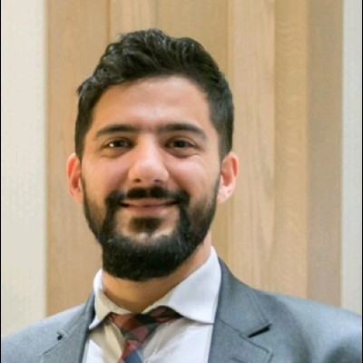

Recent updates
May 2024, Philipp Ratz defended his PhD thesis, "constraints in fair estimation and games"
June 2024, Samuel Stocksieker defended his PhD thesis,
"Contribution of machine learning in modeling rare values and imbalanced data"
Spring-Summer 2025, projects have been proposed for Mitacs Globalink Research Internships such as (45277 ) "interpretability of black box predictive models", (45286 ) "combining decision trees and regression models" and (46665 ) "causal models for machine learning"
Information for graduate students interested in applying
If you'd like to apply for an internship, PhD supervision, or postdoctoral fellowship, please send me a short message, with a CV (academic), and at least 2 names of referees, willing to give feedback and recommendation, with their emails. In return, I invite you (I encourage you to do this systematically when looking for a supervisor) to contact my students to find out more about myself and my mentoring style.
See Helene's page for practical informations, or Allo (also more in French than in English)
Students (recent)
Agathe Fernandes Machado
PhD student (alumni MSc IMT Atlantique, MSc EURIA)ArXiv:2402.07790, ArXiv:2401.16197

François Hu
Postdoc Fellow (alumni PhD ENSAE, MSc Pierre and Marie Curie University)ArXiv:2306.12912, ArXiv:2310.20508 (selection)
Olivier côté
PhD student (alumni MSc and BSc Université Laval), co-supervised with Marie-Pier Côté,SSRN:4709243
Noé Bosc-Haddad
MSc student, internship (alumni MSc École CentraleSupélec)Suzie Grondin
MSc student, internship (alumni MSc ENSAE), co-supervised with Philipp Ratz,forthcoming
Florent Crouzet
MSc student, internship (alumni MSc École Polytechnique)
Julien Siharath
MSc student, internship (alumni MSc Université de Rennes)CASdatasets vignettes
Philipp Ratz
PhD student (alumni MSc ENSAE, MSc Bonn Graduate School of Economics, BA Université de Genève)ArXiv:2309.06627 (), ArXiv:2107.02764 (selection)
Félix Foutel-Rodier
Postdoc Fellow (alumni PhD Sorbonne Université MSc École Normale Supérieure), so-supervised with Hélène Guérin,ArXiv:2306.13633

Samuel Stocksieker
PhD student (alumni PhD Université de Lyon, MSc ISFA BSc Université de Picardie Jules Verne), co-supervised with Denys Pommeret,ArXiv:2308.02966, ArXiv:2302.09288 (selection)
Ana Patrón Piñerez
MSc student, internship (alumni MSc and BSc Universidad de Los Andes), co-supervised with Agathe Fernandes Machado (Mitacs fellowship)Kim Anh Lê
MSc student, internship (alumni MSc Ludwig-Maximilians-Universität München)Rawanda Matar
MSc student (alumni MSc UQAM, MSc and BSc Lebanese University )Molly James
MSc student, intership (alumni MSc EURIA, BSc University of Southampton )nhess:2021-214, s41288:021-002337
- Postdoctoral Fellow
-
Marouane Il Idrissi
...
- Postdoctoral Fellow (former)
-
François Hu
, Milliman Paris, R&D
Félix Foutel-Rodier , Oxford University
Amirouche Benchallal . Natural Resources Canada
Ewen Gallic , AMSE
Arnaud Goussebaile , ETH Zurich
- PhD Student
-
Agathe Fernandes Machado
(supervised with Ewen Gallic )
Olivier Côté
(supervised with Marie-Pier Côté )
Samuel Stocksieker
(supervised with Denys Pommeret )
Hongda Hu
(supervised with Alexander Schied and Mario Ghossoub )
- PhD Student (former)
-
Philipp Ratz
, FEDRO
Enora Belz , Excelcio
Antoine Ly , SCOR Data Lab
(supervised with Romuald Elie )
Diogo Barry, Amadou , McGill
(supervised with Karim Oualkacha )
- Graduate Student
-
Ana Patrón Piñerez
Noé Bosc-Haddad
Julien Siharath
Florent Crouzet
- Graduate Student (former) Suzie Grondin
- Nathan Herzhaft
Kim Anh Lê
Franklin Feukam Kouhoue
Martin de Closets
Rawanda Matar
Lariosse Kouakou
Apollinaire Barme
Elie Odin
Molly James
Enora Belz
Clothilde Davesne
Julie Viard
Ewen Gallic
Clément Pravin
François Portier
Emmanuel Dupuy
Jeremy Payen
Clément Pravin
Benjamin Favetto
Angelo Caria
Kevin Masset
Thomas Anglade
Arnaud At
Gilles Chau
An Dinh
Aurélien Fortin
Marc Lenoir
Jérôme Ternat
Emilie Quémat
Khalil Antoine al Dayri
Jean-Christophe Bouëtté
Jean-François Chassagneux
David Sibaï
- Undergraduate Student
-
...
- Undergraduate Student (former)
-
Francis Proulx
Arthur David
Charles Tremblay-Bergeron
Marilou Durand
Olivier Côté
Gaspard Ichas